Get close up picture of your cat’s eyes and post it here
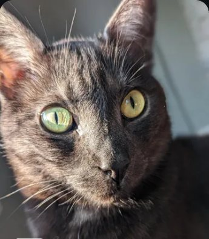
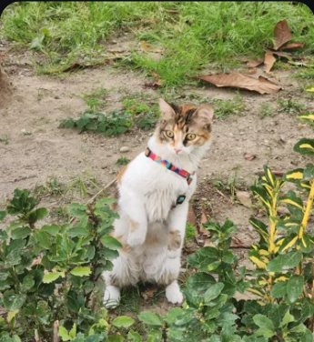
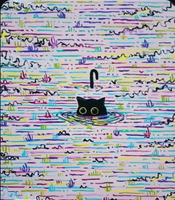
Liora Social · iPhone and Android
Liora is a place for everyday people to share and connect around the things they love.
Get close up picture of your cat’s eyes and post it here



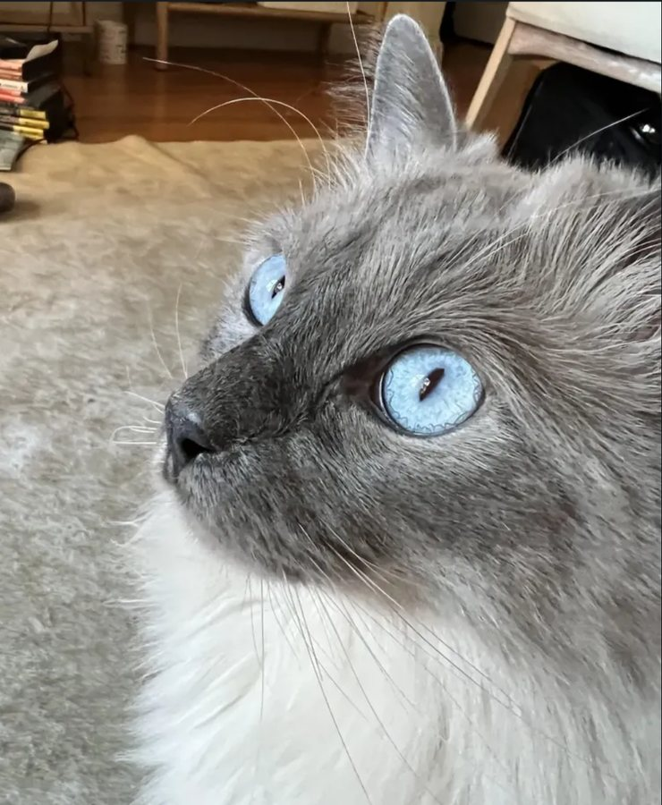
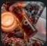
Everyday LifeCool silhouette photo from your camera roll
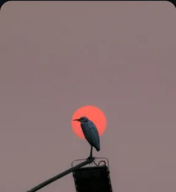
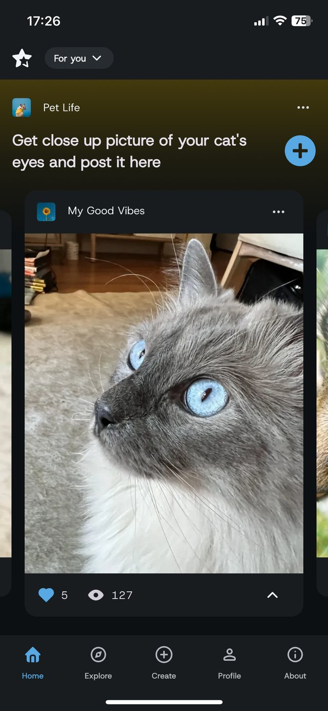
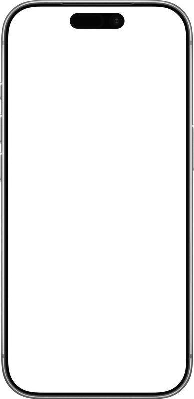
Discover engaging Topics. Your feed is made of Topics that match your interests: scroll down to move between Topics, scroll sideways to see the posts inside one.
Easily share your content with a Topic: a few photos, a title and a short note. Your post sits next to everyone else who answered the same prompt, and you connect with people around that Topic.
Create your own Topics and inspire others to share and engage around your interests. Post a prompt you would like to see answered, and anyone on Liora can add to it.
Create Projects for your different ideas and build communities around them. You get a default Project when you sign up, and each Project has its own Topics, posts, chat and members.
A few Topics from inside the app
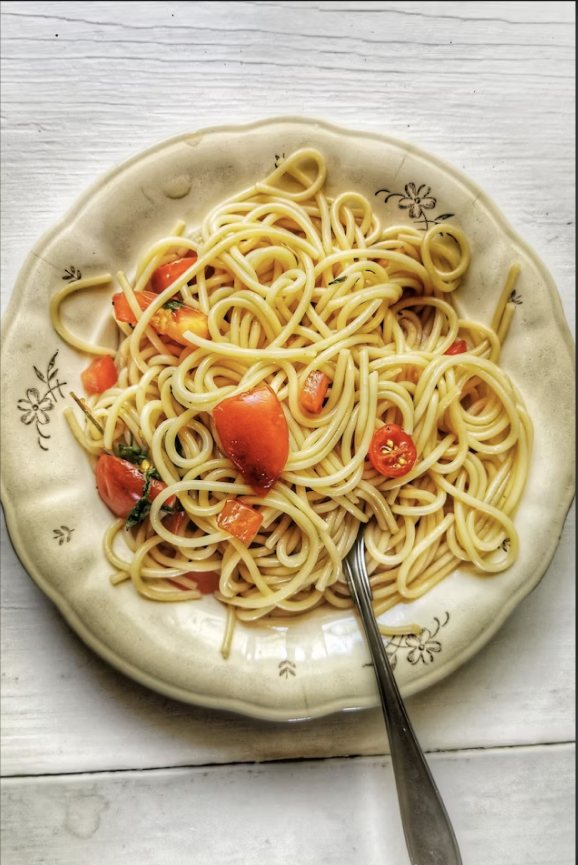
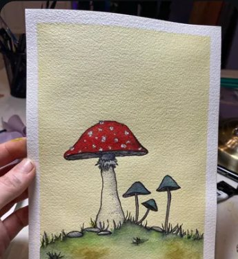
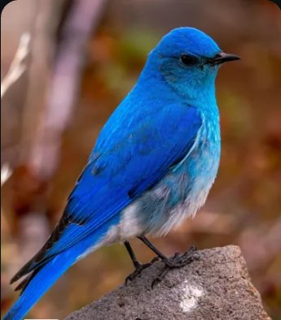
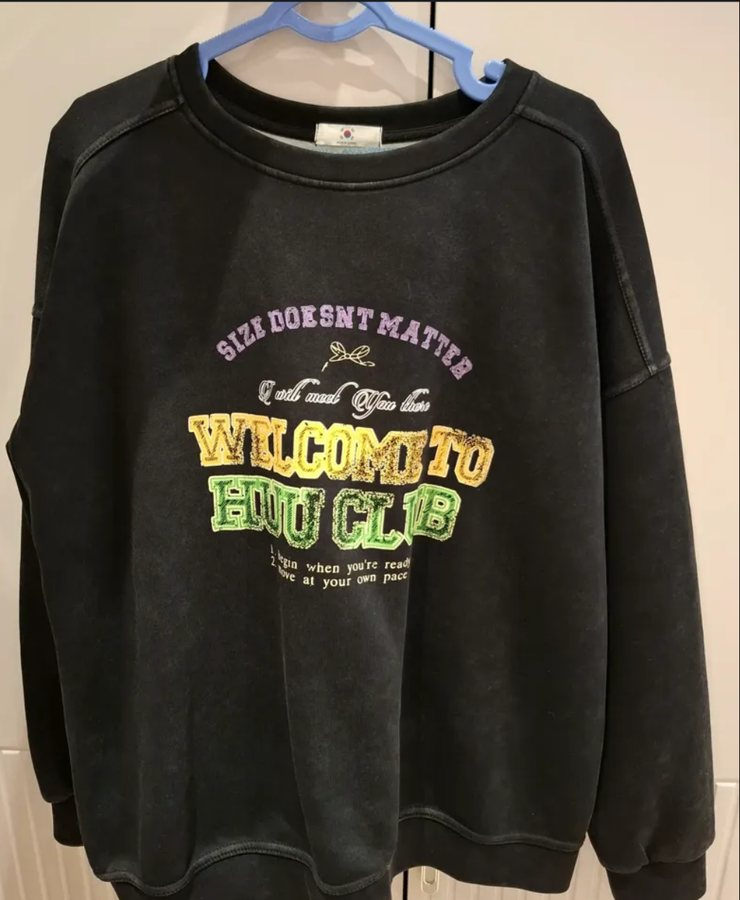
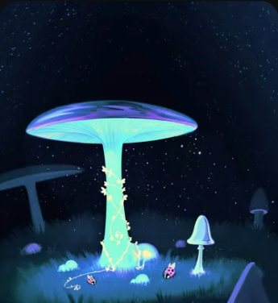
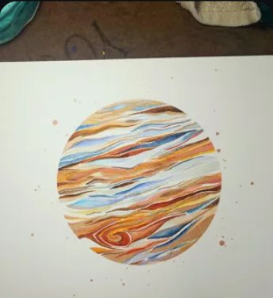
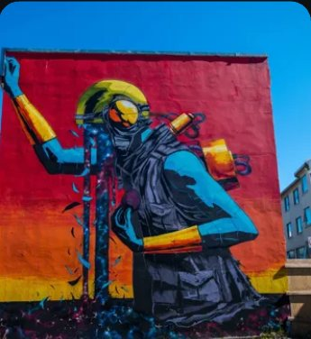
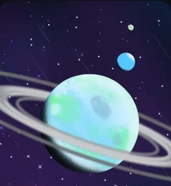
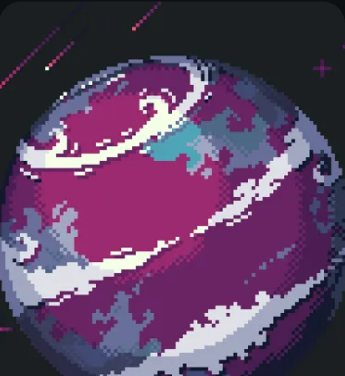
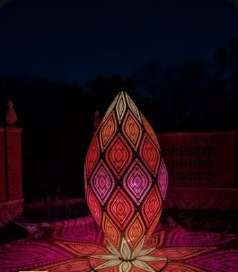
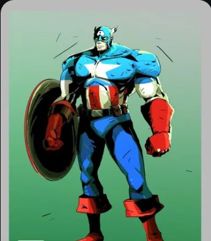
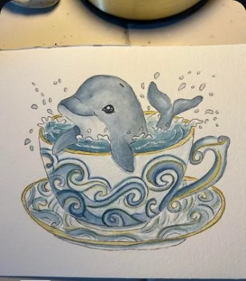
Five categories inside Liora Social
Share sketchbook pages, studies and finished pieces to Topics made by other artists.
Open →Post environment designs, character art, devlogs and screenshots to gaming Topics.
Open →Knitting, woodworking, ceramics, sewing, repairs.
Open →Your cat’s eyes, a silhouette from the camera roll, the sweatshirt you always come back to.
Open →Fan art, the scene you keep rewatching, the album on repeat this week.
Open →Liora is a place for everyday people to share and connect around the things they love. Most social apps ask you to follow people and then hope something you care about turns up. Liora starts from your interests. Your feed is a list of Topics: prompts that fit what you like. Scroll down to move between Topics, scroll sideways to see the posts inside one.
A Topic is a small prompt: draw a room in your home, share a photo of a pattern you found in nature, post a game environment you like. Anyone can answer it. The answers sit side by side, so a beginner’s sketch and a working artist’s study end up in the same gallery.
Create your own Topics and inspire others to share and engage around your interests. Post a prompt you would like to see answered, and it starts a gallery of its own. There is no pressure to perform for an audience: you post to the thing you are interested in, and the people who are interested in it too are already there.
Create Projects for your different ideas and build communities around them. Everything you create on Liora belongs to a Project: you get a default one the moment you sign up, and every Topic and post you make goes into it.
When you have more than one idea, create more Projects: one for the game you are building, one for your band, one for your cat. Each Project gets its own banner and colour, its own Topics and posts, a chat, and the people who join it. That is how communities form on Liora.
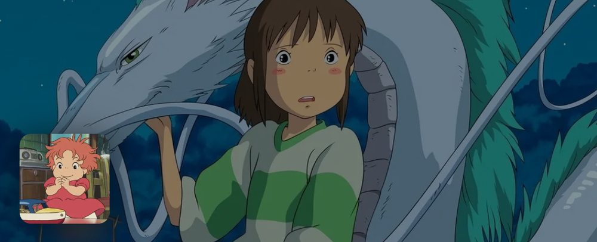
@sketchbookpages
28 8 2
Join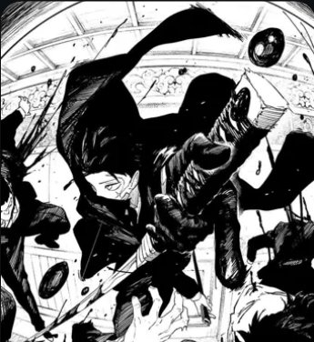
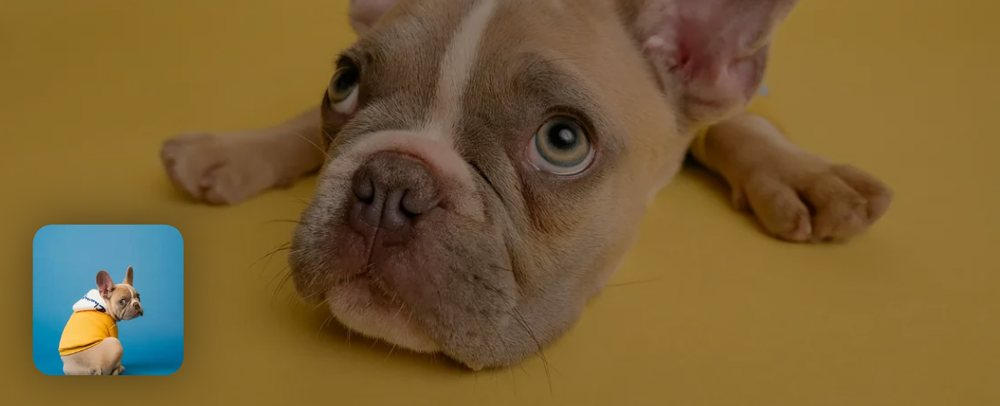
@petlife
13 6 1
Join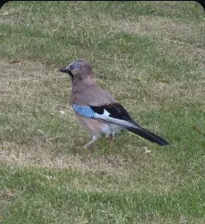
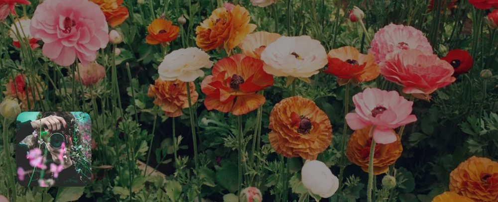
@photodiary
25 9 4
CollaborateLiora is a place for everyday people to share and connect around the things they love. iPhone with iOS 15.6 or later, and Android.
Questions, ideas, or want to meet other people on Liora? Join the Liora community on Discord.